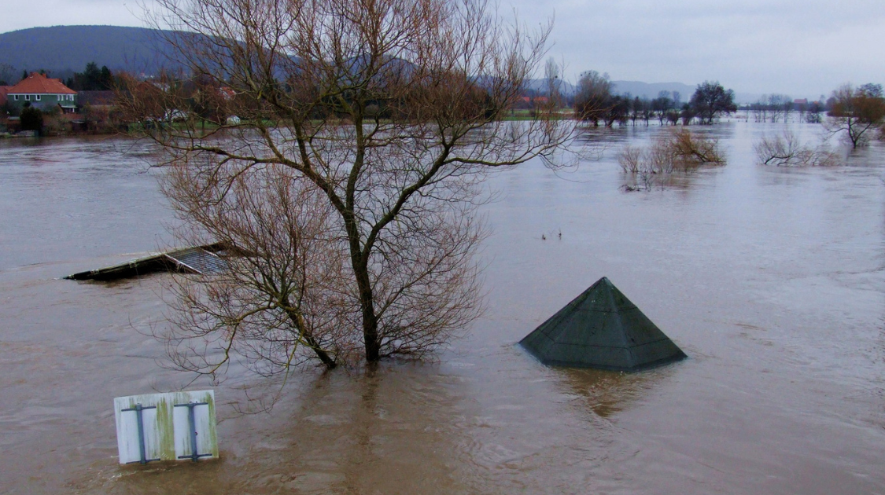

Environment
Catastrophic Flooding Destroys Houses and Highways in BC
By Enya Fang | Published Nov 24, 2021 11:05 p.m. PST

BC remains in a state of emergency after catastrophic flooding destroyed highways, houses, and bridges in perhaps the costliest natural disaster Canada has ever seen.
Five days after the weekend storm, only a single route between the Lower Mainland and the province’s Interior had been cleared. This, however, was a major step up from the 2 days that same week when all roads to the Interior from the mainland had been blocked, due to mudslides and washouts that trapped hundreds of people and vehicles on severed highways.
Authorities have confirmed that one woman was killed in a highway landslide, and the bodies of 3 men were uncovered later on. At least one person still remains missing.
Evacuation orders were issued in Abbotsford and Chilliwack on November 16, with residents told to leave the Sumas Prairie and Yarrow neighbourhoods immediately as floodwaters quickly rose. All schools in the Fraser Valley municipalities closed on Tuesday. The region, known for its rich prairies and agriculture, was the hardest hit by the storm. Thousands of livestock drowned, with more than a dozen farmhouses swamped by the floods.
The toll of damage and destruction continued to escalate; to the east, rivers began overflowing their banks, forcing entire communities like Merrit and Princeton to evacuate their homes as water and sewage infrastructure failed. Then residents in Abbotsford feared that the Barrowtown Pump Station, meant to prevent the Sumas Prairie from reforming into the lake it had been, could fail within hours. More than 150 volunteers worked through the night to save the station, passing tens of thousands of sandbags down a human chain to create a makeshift dam. Almost 200 people were rescued from the prairie by morning.
Now, after two days of dry weather, floodwaters drop in some areas of the province and an immense cleanup effort begins. Officials say in a news conference that it’s still too early to assign a numerical figure to the damage, but the mayor of Abbotsford warns the federal government that the estimated cost to rebuild his city alone could be $1 billion.
On November 19, inspectors left for communities like Merrit, flagging houses green, yellow, and red by their condition. Gas rationing took provincial effect due to supply lines severed by the storm. Non-essential travel on all 3 reopened highways – Highways 3, 7, 99 – has been barred.
As cleanup began with no end in sight, hundreds of personnel with the Canadian Armed Forces arrived in B.C. to help with disaster relief. Volunteers in Chilliwack communities filled and delivered sandbags to farms inside the floodwater zone in Sumas Prairie. Strangers in Abbotsford came together with what watercraft they could find to tow livestock to safety through the flooded prairies. Many farms unaffected by the storm had room or made room to give shelter to the cattle and goats rescued.
The road to recovery and repair is a long and winding one, but if there’s any takeaway from this entire ordeal it’s that truly, when the world is at its worst, humanity is at its best.